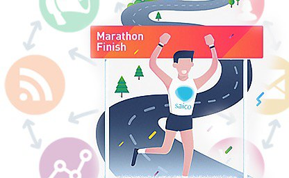

1.Как сократить расходы на рекламу(Пробный урок)
Хотите сократить расходы на рекламу в Instagram, не пожертвовав при этом её эффективностью? Для этого достаточно правильно настроить таргетинг объявлений. Для этого социальная сеть предоставляет удобные инструменты. Вам просто нужно изучить их и научиться правильно использовать в ваших рекламных компаниях.

2. 7 самых распространенных ошибках в продвижении компании или бренда в Инстаграм
Чем больше препятствий вы будете создавать на пути потенциального клиента, тем меньше шансов, что он станет клиентом реальным. Скорее всего, человек просто подпишется на уже открытый аккаунт вашего конкурента.
Это базовая ошибка, но, к сожалению, время от времени, мы все еще наталкиваемся на такие вот закрытые аккаунты брендов. Если закрытые аккаунты для личных профилей — это нормально, то для компаний это, как минимум, странно.

Учимся правильно фотографировать
Несмотря на то, что информация интересная и познавательная, она набирает мало просмотров и лайков. Причина тому - неправильно выбранное фото. Мы научим вас делать пропорциональное, интересное и красивое фото.

Возможности Stories
Сегодня мы с вами будем говорить о stories. Сейчас stories в конверсии. Он стал важнее публикаций на главных страницах. Поэтому вы должны уметь пользоваться всеми возможностями stories.

Контент план и копирайтинг
Хороший и интересный пост требует много времени. Чтобы выложить познавательную информацию, вам нужен план. Этот план поможет вам выбрать и подготовить «вкусную» тему для вашей аудитории.

Лучшие сервисы для автоматического продвижения в Инстаграм 2019
В эпохе наших прогрессивных технологий «видеоконтент» в обществе стал наиболее эффективным средством доставки информации и привлечения потребителей.
Прямой эфир и Таргетинг
Используя Instagram, вы можете транслировать в прямом эфире, отвечать на вопросы читателя, или вы можете использовать его, чтобы показать сцену, то что происходит в данное время.
Дополнительные функции
Instagram является визуальной социальной страницей, и поэтому мы загружаем фото-видео материалы. Чтобы изменить качество фото, мы используем обрабатывающие программы, подробнее о них.
Акции и конкурсы в социальных сетях и Статистика в Instagram
Вы же любите получать подарки и радовать себя? И ваши читатели тоже любят. Поэтому не уставайте их радовать. А для этого вам нужно устраивать конкурсы и акции.
IGTV - новая эра телевидения
Социальный интеллект - это совокупность способностей, определяющая успешность социального взаимодействия.